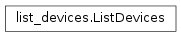

| Parameters: | Builder (Gtk.Builder) – glade builder |
|---|
Create view for devices
Load all devices
Load disks
Load LVM2 PVs
Load LVM2 VGs
Onselect action for devices
Update device view
| Parameters: |
|
|---|
Note
After removing or adding VGs or PVs it is neccesary to add or remove these devices from device list. After removing all queud actions it is neccesary to go through list of devices and find if they are still in devicetree and also go through devicetree and find if those devices are in device list. This function will update the Gtk.ListStore.